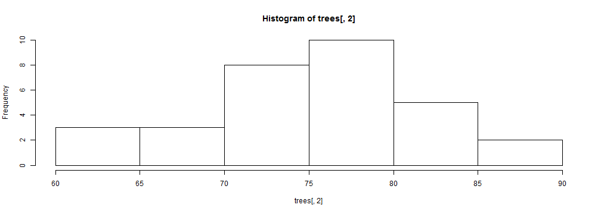
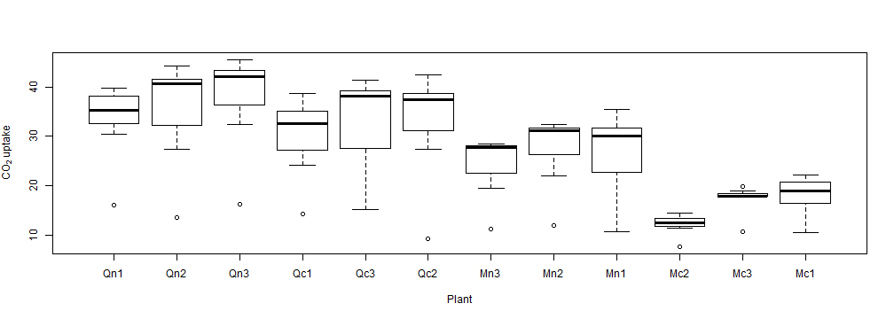
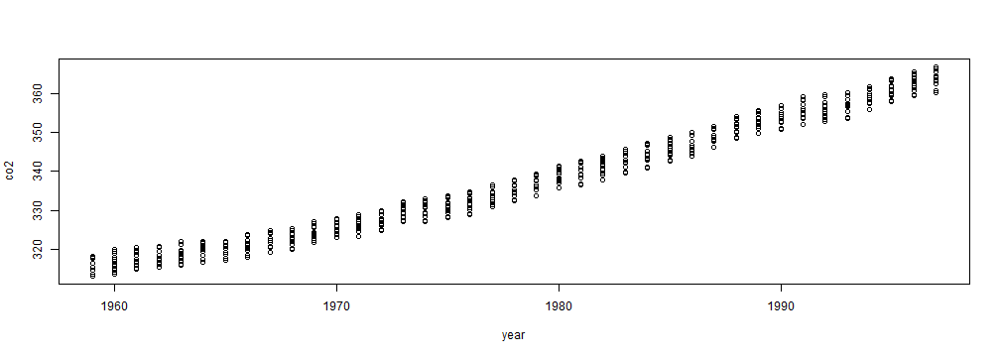
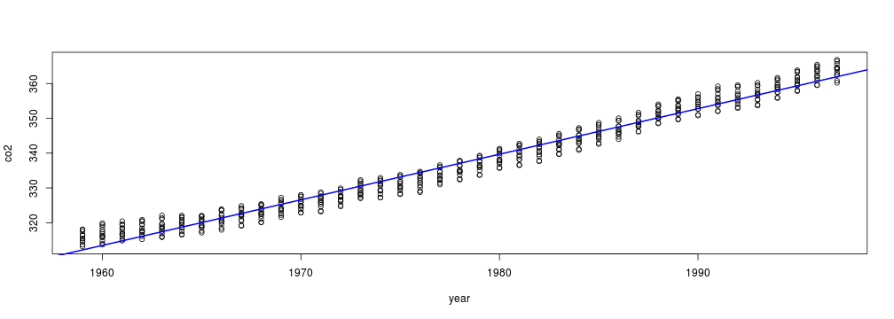
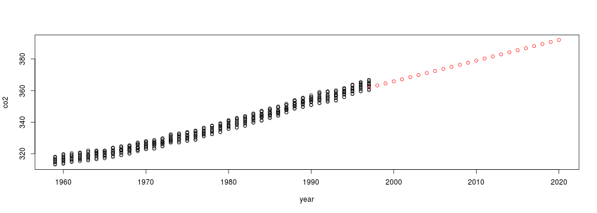

R is an open-source statistical programming language. It is now widely used in both business and academia. It is both powerful and actively developed, so the number of add-on packages for it are constantly increasing.

Sebastian Campbell and José Padarian
Use the left and right arrow keys to navigate slides.
R is an open-source statistical programming language. It is now widely used in both business and academia. It is both powerful and actively developed, so the number of add-on packages for it are constantly increasing.
Hopefully by now you've started up RStudio (or your IDE or text editor of choice) and are greeted by a command prompt:

As is traditional in programming, we'll start off with a Hello world! program. Try the below:
print("Hello world!")
## [1] "Hello world!"
Congratulations! You've taken your first steps into R. You've used the function print to print the text "Hello world!" to the screen. Functions are basically like verbs in language, they tell R to do something. Notice the brackets () after the name of the function in which you can tell the function what to do.
Don't worry too much about the [1] at the beginning, we'll explain that soon. Note that you can also type "Hello world!" without the print command and R will assume you meant to print it.
We can also use R as a calculator for addition and powers:
2 + 2
## [1] 4
2^3
## [1] 8
Note that there are other operators we can use, like * for multiplications, - for subtraction and / for division.
We'll be having a few quizzes like this during this tutorial. No pressure, it's just to check your understanding. Click 'Submit' to check if your answer is right. If you give up 'Check answer' will give you an answer. 'Clear' will allow you to start that quiz from scratch.
6 / 2?It's 3, because $\frac{6}{2} = 3$.
So now we can do some maths, but we don't want to have to remember the results every time. So let's store some as variable, so we can refer to them by name. To assign, we can use either the = or <- operator (though <- is recommended).
core_volume <- 100
core_mass <- 180
bulk_density <- core_mass/core_volume
bulk_density
## [1] 1.8
Note that assignment doesn't print the variable to the console.
R doesn't just work with numbers, it can also work with "strings" or characters. Strings are denoted by the quotes ("") surrounding them. We've already used these when we made our "Hello world!" program. In fact, we can use the paste function to stick them together.
paste("The bulk density is:", 1.75, sep = " ")
## [1] "The bulk density is: 1.75"
The paste function sticks strings and numbers together into a single string. The sep argument says: "Put a space between all of the things I'm sticking together".
Let's combine all the things we know so far into something useful. Remember the bulk density we calculated earlier?
paste("The bulk density is:", bulk_density, sep = " ")
## [1] "The bulk density is: 1.8"
Here R evaluated our variable bulk_density and added it to the string we were trying to make.
"1:2:3:x:y:z"The first option. The second option won't work as there's only one string, so R can't place separators between strings. The third option is trying to call variables named x, y and z (but it's likely none exist). Finally, the fourth option is space-separated, not colon-separated.
So we've been dealing with individual strings and numbers, let's move onto combining those into vectors. A vector is basically just a 1-dimensional array of data. Like a set of numbers or a shopping list. It's really easy to make vectors of sequential integers:
1:10
## [1] 1 2 3 4 5 6 7 8 9 10
5:-5
## [1] 5 4 3 2 1 0 -1 -2 -3 -4 -5
You can also make vectors of strings or numbers using the combine (c) function:
c(5, 4, 3, 2, 8)
## [1] 5 4 3 2 8
c("sand", "silt", "clay")
## [1] "sand" "silt" "clay"
But be careful. These kinds of vectors can only take one type of data. If you combine numbers and strings together:
c("SOILID001", 3, 5, "SOILID006", 7)
## [1] "SOILID001" "3" "5" "SOILID006" "7"
Then they all become characters.
If you think about it, you can treat numbers as letters, but it's a lot harder to treat letters as numbers.
Now that we can make vectors we can make subsets of bigger datasets, matrices and dataframes. Just to start off, we'll use a simple dataset which comes with R: trees (Try ?trees for more information about the data). It is a data frame, a collection of vectors as columns. The vectors are allowed to be different types (character, integer, numeric), but they must all be the same length.
trees
## Girth Height Volume
## 1 8.3 70 10.3
## 2 8.6 65 10.3
## 3 8.8 63 10.2
## 4 10.5 72 16.4
## 5 10.7 81 18.8
## 6 10.8 83 19.7
## 7 11.0 66 15.6
## 8 11.0 75 18.2
## 9 11.1 80 22.6
## 10 11.2 75 19.9
## 11 11.3 79 24.2
## 12 11.4 76 21.0
## 13 11.4 76 21.4
## 14 11.7 69 21.3
## 15 12.0 75 19.1
## 16 12.9 74 22.2
## 17 12.9 85 33.8
## 18 13.3 86 27.4
## 19 13.7 71 25.7
## 20 13.8 64 24.9
## 21 14.0 78 34.5
## 22 14.2 80 31.7
## 23 14.5 74 36.3
## 24 16.0 72 38.3
## 25 16.3 77 42.6
## 26 17.3 81 55.4
## 27 17.5 82 55.7
## 28 17.9 80 58.3
## 29 18.0 80 51.5
## 30 18.0 80 51.0
## 31 20.6 87 77.0
Another way of examining objects is the str() function
str(trees)
## 'data.frame': 31 obs. of 3 variables:
## $ Girth : num 8.3 8.6 8.8 10.5 10.7 10.8 11 11 11.1 11.2 ...
## $ Height: num 70 65 63 72 81 83 66 75 80 75 ...
## $ Volume: num 10.3 10.3 10.2 16.4 18.8 19.7 15.6 18.2 22.6 19.9 ...
More useful information about the dataframe's columns can be obtained using summary():
summary(trees)
## Girth Height Volume
## Min. : 8.3 Min. :63 Min. :10.2
## 1st Qu.:11.1 1st Qu.:72 1st Qu.:19.4
## Median :12.9 Median :76 Median :24.2
## Mean :13.2 Mean :76 Mean :30.2
## 3rd Qu.:15.2 3rd Qu.:80 3rd Qu.:37.3
## Max. :20.6 Max. :87 Max. :77.0
The basic form of a subset is object[whichrows, whichcolumns]. Leaving an element blank means select all. So for example, to get the third row of trees, or the second column:
trees[3, ]
## Girth Height Volume
## 3 8.8 63 10.2
trees[, 2]
## [1] 70 65 63 72 81 83 66 75 80 75 79 76 76 69 75 74 85 86 71 64 78 80 74
## [24] 72 77 81 82 80 80 80 87
You might have noticed the [24] in the second line of trees[, 2]. This indicates that the 72 next to it is the 24th element of that vector. There just isn't enough room on the screen to show it all in one line.
We can get individual values by setting both rows and columns
trees[3, 2]
## [1] 63
trees[1, 1]
## [1] 8.3
And we can also use nrow and ncol (gets the number of rows or columns) to get the last elements:
nrow(trees)
## [1] 31
trees[nrow(trees), ]
## Girth Height Volume
## 31 20.6 87 77
trees[, ncol(trees)]
## [1] 10.3 10.3 10.2 16.4 18.8 19.7 15.6 18.2 22.6 19.9 24.2 21.0 21.4 21.3
## [15] 19.1 22.2 33.8 27.4 25.7 24.9 34.5 31.7 36.3 38.3 42.6 55.4 55.7 58.3
## [29] 51.5 51.0 77.0
You can also subset collections of elements. To get the fourth to seventh row of the first and third column:
trees[4:7, c(1, 3)]
## Girth Volume
## 4 10.5 16.4
## 5 10.7 18.8
## 6 10.8 19.7
## 7 11.0 15.6
trees?Using the line trees[nrow(trees) - 2, 2] will get you the third last row of the second column. Third last is the last one minus 2 places.
Data frames are collections of vectors, so you can use their names to extract them. You can use your original notation and also $ notation (which is convenient, but not as powerful).
trees[, "Height"]
## [1] 70 65 63 72 81 83 66 75 80 75 79 76 76 69 75 74 85 86 71 64 78 80 74
## [24] 72 77 81 82 80 80 80 87
trees$Height
## [1] 70 65 63 72 81 83 66 75 80 75 79 76 76 69 75 74 85 86 71 64 78 80 74
## [24] 72 77 81 82 80 80 80 87
Often, we want all the rows that meet a certain condition. Say I want all the trees where the height is greater than 82 ft. First, I can produce a TRUE/FALSE variable, then take only the cases where it is true:
greater82 <- trees$Height > 82
greater82[1:5]
## [1] FALSE FALSE FALSE FALSE FALSE
trees[greater82, ]
## Girth Height Volume
## 6 10.8 83 19.7
## 17 12.9 85 33.8
## 18 13.3 86 27.4
## 31 20.6 87 77.0
Using the code trees[trees$Girth < 12.5, ], we can see that there are 15 trees with a girth less than 12.5. Press 'p' to see the whole expected output.
A plot is worth a thousand words... Well, R is capable of plotting data in many different ways. Let's start some basic function:
hist(trees[, 2])

Let's use some extra arguments for the funtion hist():
hist(trees[, 2], xlab = "Height", main = "Our first plot!")
Another simple and useful plot is the boxplot. Remember that we can fix up those messy axis labels with the xlab and ylab arguments. We'll use another sample dataset (CO2) so remember to check its structure.
boxplot(uptake ~ Plant, data = CO2, xlab = "Plant", ylab = expression(CO[2] ~
"uptake"))

Let's take a look to the dataset co2 and modify it...
dim.names <- list(month.abb, unique(floor(time(co2))))
data.co2 <- as.data.frame(t(matrix(co2, 12, dimnames = dim.names)), row.names = F)
data.co2$year <- as.numeric(dim.names[[2]])
head(data.co2)
## Jan Feb Mar Apr May Jun Jul Aug Sep Oct Nov Dec
## 1 315.4 316.3 316.5 317.6 318.1 318.0 316.4 314.6 313.7 313.2 314.7 315.4
## 2 316.3 316.8 317.4 318.9 319.9 319.4 318.0 315.7 314.0 313.7 314.8 316.0
## 3 316.7 317.5 318.4 319.3 320.4 319.6 318.4 316.6 314.8 315.2 315.9 316.9
## 4 317.8 318.4 319.5 320.4 320.9 320.4 319.4 317.2 316.1 315.3 316.5 317.5
## 5 318.6 318.9 319.7 321.2 322.1 321.3 319.6 317.6 316.1 315.8 316.9 318.2
## 6 319.4 320.1 320.7 321.4 322.1 321.7 320.3 318.5 316.5 316.7 317.5 318.6
## year
## 1 1959
## 2 1960
## 3 1961
## 4 1962
## 5 1963
## 6 1964
For the next modification we will need to load a new library (and posibly install it!).
install.packages("reshape2")
library(reshape2)
R is free and there are many official packages available (check CRAN list).
Also many people create their own packages to distribute their work. Most of them are hosted in github or similar websites. In this workshop you will be using a custom package developed in this Department.
Now we have the reshape2 package loaded in, we can use the melt() function to melt out dataframe. See the ?melt.data.frame page for details. The id.vars are the variables we don't want to melt. The .name arguments control the column names of the result:
data.co2_melt <- melt(data.co2, id.vars = "year", variable.name = "month", value.name = "co2")
head(data.co2_melt)
## year month co2
## 1 1959 Jan 315.4
## 2 1960 Jan 316.3
## 3 1961 Jan 316.7
## 4 1962 Jan 317.8
## 5 1963 Jan 318.6
## 6 1964 Jan 319.4
Now that we have stacked data, it's much easier to make plots. For example, it's easy to make a simple scatterplot.
plot(co2 ~ year, data = data.co2_melt)

Stacking out data has also made our data easier to summarise. We're going to use the plyr package. In particular, a function ddply() Let's start with something simple. Let's get the mean temperature for each Depth:
library(plyr)
year_mean <- ddply(data.co2_melt, c("year"), summarise, meanco2 = mean(co2))
head(year_mean)
## year meanco2
## 1 1959 315.8
## 2 1960 316.7
## 3 1961 317.5
## 4 1962 318.3
## 5 1963 318.8
## 6 1964 319.5
Now we can plot that easily:
plot(meanco2 ~ year, data = year_mean)
ggplot2 is a powerful package which allows you to build up complex plots from basic elements.
ggplot(data.co2_melt, aes(x = year, y = co2)) + geom_point()
## Error: could not find function "ggplot"
With a few modifications to the original code we can generate a much clear plot.
ggplot(data.co2_melt, aes(x = year, y = co2, colour = month)) + geom_line()
## Error: could not find function "ggplot"
We can go back to our melted data and look at all the concentrations of carbon dioxide over time, for each month using facets.
ggplot(data.co2_melt, aes(x = year, y = co2)) + geom_line() + facet_wrap(~month)
## Error: could not find function "ggplot"
If we want to check the behaviour of the carbon dioxid concentration over time, we can use the function 'lm()'
model_ <- lm(co2 ~ year, data = data.co2_melt)
model_
##
## Call:
## lm(formula = co2 ~ year, data = data.co2_melt)
##
## Coefficients:
## (Intercept) year
## -2255.11 1.31
We can access some important information using summary()
summary(model_)
##
## Call:
## lm(formula = co2 ~ year, data = data.co2_melt)
##
## Residuals:
## Min 1Q Median 3Q Max
## -5.653 -1.807 0.053 1.695 6.405
##
## Coefficients:
## Estimate Std. Error t value Pr(>|t|)
## (Intercept) -2.26e+03 1.99e+01 -113 <2e-16 ***
## year 1.31e+00 1.01e-02 130 <2e-16 ***
## ---
## Signif. codes: 0 '***' 0.001 '**' 0.01 '*' 0.05 '.' 0.1 ' ' 1
##
## Residual standard error: 2.45 on 466 degrees of freedom
## Multiple R-squared: 0.973, Adjusted R-squared: 0.973
## F-statistic: 1.7e+04 on 1 and 466 DF, p-value: <2e-16
We can produce familiar tables containing sum of squares and pvalues using the anova() function:
anova(model_)
## Analysis of Variance Table
##
## Response: co2
## Df Sum Sq Mean Sq F value Pr(>F)
## year 1 101808 101808 16978 <2e-16 ***
## Residuals 466 2794 6
## ---
## Signif. codes: 0 '***' 0.001 '**' 0.01 '*' 0.05 '.' 0.1 ' ' 1
Let's plot the previous data and fitted linear model:
plot(co2 ~ year, data = data.co2_melt)
abline(model_, col = "blue", lwd = 2)

What a horrible trend we have there... let's see what would happend until the year 2020 if we don't do something to change that...
predictions <- predict(model_, newdata = data.frame(year = 1997:2020))
plot(co2 ~ year, data = data.co2_melt, xlim = c(min(data.co2_melt$year), 2020),
ylim = c(min(data.co2_melt$co2), max(predictions)))
points(1997:2020, predictions, col = "red")

Ok, ok... We'll use some spectroscopy data to show you two last tasks you can do with R: loading data files and making your own functions.
Let's prepare our session to work with our files:
getwd()
Now set the working directory with the correct path using the function setwd(). If you are not sure how to do it, you can use the help for that command typing ?setwd.
setwd("path to directory")
Let's take a look to the next spectroscopy data (save it in your computer).
If we try directly with the function read.table()
spec_data <- read.table(file = "kaolinite_cm9.11962.asc")
## Error: line 1 did not have 8 elements
!!!!
Relax... Let's open the file in an external text editor...
After checking the structure of the file we can use extra arguments for the funtion read.table()
spec_data <- read.table(file = "kaolinite_cm9.11962.asc", skip = 16, na.strings = "-1.23e34",
col.names = c("wavelength", "reflectance", "sd"))
spec_data$wavelength <- spec_data$wavelength * 1000
head(spec_data)
## wavelength reflectance sd
## 1 205.1 NA 0.000000
## 2 213.1 NA 0.093990
## 3 221.1 NA 0.026866
## 4 229.1 NA 0.011748
## 5 236.1 NA 0.008168
## 6 242.1 NA 0.005388
Usually we have to do tedious and repetitive tasks (like the one we just did). In those cases is recomended to create a function to automatise this process.
read_spec <- function(.spectra_file) {
.data <- read.table(file = .spectra_file, skip = 16, na.strings = "-1.23e34",
col.names = c("wavelength", "reflectance", "sd"))
.data[, 1] <- .data[, 1] * 1000
.data
}
kaol <- read_spec(.spectra_file = "kaolinite_cm9.11962.asc")
head(kaol)
## wavelength reflectance sd
## 1 205.1 NA 0.000000
## 2 213.1 NA 0.093990
## 3 221.1 NA 0.026866
## 4 229.1 NA 0.011748
## 5 236.1 NA 0.008168
## 6 242.1 NA 0.005388
If the other files have the same struture, you can keep using that funcion to read data in.
mont <- read_spec(.spectra_file = "montmorillonite_sca2.14557.asc")
head(mont, 3)
## wavelength reflectance sd
## 1 205.1 NA 0.045997
## 2 213.1 NA 0.006912
## 3 221.1 0.03019 0.002152
illi <- read_spec(.spectra_file = "illite_imt1.10982.asc")
head(illi, 3)
## wavelength reflectance sd
## 1 205.1 NA 0.00000
## 2 213.1 NA 0.11321
## 3 221.1 NA 0.04883
When you have a bit more R experience, you can make graphs like the following:
Plot soil profiles with the help of package aqp:

Plot soil profiles locations:


This presentation was entirely made in R using some useful packages such as slidify (Vaidyanathan, 2012). You can look at the source for it on GitHub.

Vaidyanathan R (2012). slidify: Generate reproducible html5 slides from R markdown. R package version 0.3.3, http://ramnathv.github.com/slidify/.